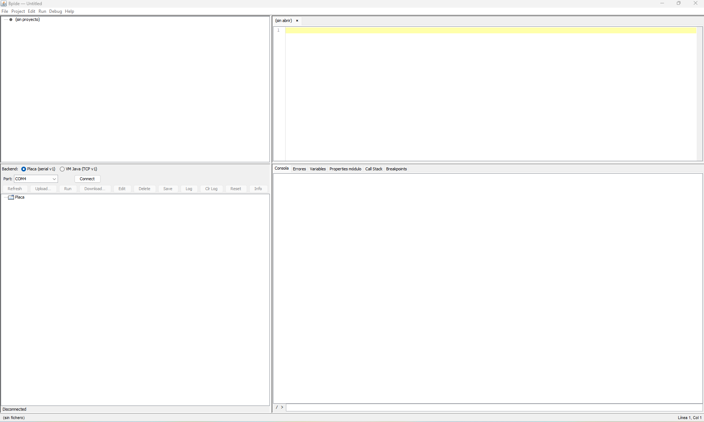
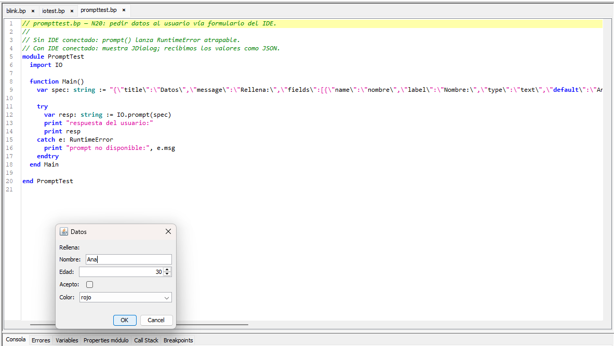

BasicPlus — Guía del IDE
BpIde es el entorno de desarrollo de BasicPlus: editor, compilador, ejecución local y remota, explorador de la placa y depurador.
1. Arrancar el IDE
No hay instalador: se descomprime el ZIP donde quieras y se arranca. Lo único que hace falta tener puesto es Java.
bpide.bato, si lo prefieres a mano:
java -jar BpIde-7.0.jar
Junto al .jar viajan las carpetas de las que el IDE tira solo,
sin configurar nada: la biblioteca de packs
(packs/, §10), el micro simulado (bin/, §6.1), la
documentación (docs/, la que abre Help →
Documentación con F1) y las imágenes de firmware de las placas
(firmware/). Si mueves el jar suelto a otro sitio, deja de
encontrarlas — lo que se mueve es la carpeta entera.
2. La ventana

Cuatro zonas:
- Árbol del proyecto (arriba-izquierda): fuentes, recursos, salida compilada y dependencias del proyecto abierto.
- Editor (arriba-derecha): pestañas con resaltado de sintaxis BP; la línea actual queda marcada y la posición se ve en la barra de estado.
- Explorador de la placa (abajo-izquierda): el selector de backend (Placa serial o VM Java por TCP), el puerto, el botón Connect y — una vez conectado — el árbol de ficheros del micro con su botonera.
- Consola y depuración (abajo-derecha): pestañas
Consola, Errores, Variables,
Properties módulo, Call Stack y
Breakpoints. Abajo, el prompt
/ >de la consola de comandos del micro (§7).
Encima, la barra de botones. A la izquierda, ficheros y proyecto; en el
centro, la ejecución: Compile, Build Proj, Run,
Run Window (ejecuta en el PC sobre la VM-C, con su ventana — para
programas con interfaz gráfica), Run on Device, Placa
(§9), Entorno (§9.3), DAO build (los DAO del proyecto a
partir de sus @BD), Debug y Stop; a la
derecha, indentar y comentar la selección.
3. Proyectos

Project → New Project crea la estructura estándar;
File → New añade ficheros sueltos. Un proyecto se
describe en su .bpbuild/.bpproject (JSON,
ver la referencia §16) y se
organiza en:
- Sources — los
.bpdel proyecto (en la captura:App.bpyUtil.bp). - Resources — ficheros de datos que el Run copia al micro tal cual (configuraciones, tablas…).
- Output — lo que produce el compilador: los
.mod(bytecode en formato MOD9, con su interfaz dentro — y, si el proyecto usanative, también el código máquina: va dentro, no en un.mdnsuelto), y el.packsi el proyecto empaqueta (§10). - Dependencies — módulos importados resueltos.
4. Editar y compilar
Run → Compile compila el fichero o el proyecto; los diagnósticos aparecen en la pestaña Errores con su fichero, línea, columna, tipo (léxico / sintáctico / semántico) y mensaje, separando errores de avisos. Doble clic en una fila salta a esa posición en el editor.

El compilador no se detiene en el primer error ni se
ahoga en cascadas: se recupera a nivel de sentencia/función y sigue,
de modo que una sola pasada saca a la luz errores reales de todo el
módulo. En la captura conviven un error léxico+sintáctico (un
= donde iba := — el lenguaje usa
:= para asignar) y, en otra función más abajo, un
identificador no declarado: el fallo de la primera no oculta el de la
segunda. Las cascadas espurias se podan (un operando ya erróneo no
genera errores derivados) y, si hubiera muchísimos, se recortan con
un «y N más».
5. Ejecutar (y parar)
- Run → Run: ejecuta en el PC, sobre la VM Java (daemon local). La salida del programa llega a la Consola.
- Run → Run on Device: sube el
.moda la placa conectada (con las dependencias que falten y los resources del proyecto) y lo ejecuta allí; la salida vuelve en vivo a la Consola. - Run → Stop (Ctrl+F2): aborta el programa en
marcha — local, en la ventana de Run Window o en placa — sin
reiniciar nada. En la placa es un
KILL cooperativo: la VM muere limpia y el micro sigue
respondiendo, también si el programa está dentro de una función
nativelarga. El programa termina con código 130. Elkill(ostop) de la línea de comandos del explorador hace lo mismo.
Un programa a la vez. Mientras hay uno en marcha, Run,
Run Window, Debug, Run on Device y el run de la
línea de comandos no lanzan otro: lo dicen, y hay que pararlo antes con Stop. Compilar
sí se puede. Y al cerrar el IDE, lo que tenga en marcha en el PC se para.
Dónde corre en el PC. La VM Java tiene su flash, como una
placa, con sus /sys, /lib, /app y
/data (§6): la carpeta .basicplus\flash de tu
usuario. Una ruta absoluta del programa
("/data/Termostato/lecturas.csv") va dentro de ella. El
programa corre en app\<proyecto> de esa flash, con el
nombre que le daría la placa (/app/<proyecto>), o en
app si no hay proyecto, y la carpeta se queda al acabar: lo que
el programa guarda con una ruta relativa ("lecturas.csv") sigue
ahí en el siguiente Run, y lo puedes mirar. En la placa, en cambio, esa misma
ruta va a la raíz de la flash (/lecturas.csv), no a la carpeta
del programa: para que guarde lo mismo en el PC y en la placa, una ruta de
/data ("/data/Termostato/lecturas.csv"; referencia
§13.11). Con proyecto, el IDE borra de esa
carpeta los .mod, .bpi y .dbg que ya
no sube; lo que escribe el programa, nunca. Los resources del
proyecto no se copian: si el programa los necesita en el PC, hazlo un pack
de aplicación (§10).
Al acabar un programa —bien, con un error o con Stop—, sus objetos se destruyen y cada uno suelta lo suyo: un PWM se para, los pines y los buses quedan libres (manual §9.4b). Lo que no suelte ningún objeto lo suelta la placa al final del RUN, y las salidas vuelven a como estaban tras el reset. Esa destrucción tiene un tope de 3 s: lo que no acabe, lo suelta la placa y el log lo dice.
Las dependencias no se retransmiten. Antes de subir,
el IDE pregunta a la placa por cada módulo que el programa importa, y la
placa lo busca donde lo cargaría (§10.2). Un módulo del programa
se sube si falta, si la placa lo tiene en un formato anterior o si,
siendo el mismo, su CRC es otro (lo acabas de recompilar); si la placa lo
tiene más nuevo, se queda el suyo. Uno de la biblioteca estándar
sigue la regla de las librerías: lo que el programa pide es una versión
mínima —la del .mod contra el que se compiló—, y si la placa
tiene ésa o una posterior, en el mismo formato, vale aunque sea otra
compilación (otro CRC): no se sube. Sólo se sube el que falta, el de otro
formato o el de una versión anterior a la mínima, y va a /lib
(la stdlib va en la imagen de la placa —no entera en todas— o en el
Stdlib.pack, §10.3). La Consola dice de dónde carga cada uno
(ruta y CRC) y por qué lo sube o no, y avisa si esa copia no es la que el
proyecto pondría — cuando algo falla por una dependencia, esa línea es la
que dice de dónde salió el módulo.
Al terminar, la Consola cierra con el código de salida, el motivo y
el tiempo de ejecución — exit 0 (OK) en 94 ms
(en segundos a partir de los 10 s). El tiempo es el de la ejecución,
con el módulo ya cargado, y lo miden igual la VM Java y las placas. Qué
significa cada código, en help error (§7).
Si el programa pide datos al usuario con IO.prompt, el
IDE despliega un formulario y la ejecución se pausa hasta que lo
rellenas: campos de texto, numéricos, casillas y desplegables según
lo que el programa declare.

IO.prompt es una utilidad de desarrollo de la VM Java
(PC): el formulario lo dibuja el IDE. En los micros no está disponible
— allí IO.prompt lanza un RuntimeError
atrapable, así que envuélvelo en try/catch si tu programa
ha de correr también en placa.
5.1 native (AOT): el compilador de C
Si el programa usa function native, en Run on Device el
IDE compila esas funciones a código máquina y lo funde dentro del
propio .mod: se sube un solo fichero y no
hay dos que puedan desparejarse. Para ese paso hace falta un
compilador de C cruzado — y no viene con
BasicPlus: no es nuestro, así que se instala aparte. Cuál, depende
de la placa:
| Placas | Compilador | De dónde sale |
|---|---|---|
| RP2350 (Pico 2, Metro) y STM32 | arm-none-eabi-gcc |
Arm GNU Toolchain — y si ya usas STM32CubeIDE o el pico-sdk, ya lo tienes |
| ESP32-P4 | riscv32-esp-elf-gcc |
viene dentro del ESP-IDF (guía de instalación de Espressif) — versión 6 o posterior |
| ESP32-C3, ESP32-C5 y ESP32-C6 | riscv32-esp-elf-gcc |
el mismo del ESP-IDF: son RISC-V sin FPU, y el IDE compila para
ellas lo suyo (destino riscv-imc, ABI ilp32) porque
la placa le dice su receta |
| ESP32-S3 | — | en esta versión native corre interpretado en el S3 |
Lo del ESP-IDF hay que decirlo claro. Programar en BasicPlus
no exige tener el ESP-IDF instalado — se puede tener una P4, una C3, una
C5 o una C6, escribir, subir y ejecutar sin haber visto nunca una línea de C. El
ESP-IDF hace falta sólo si quieres usar function native
en esas placas, y entonces se instala aparte por la guía de Espressif. Y que sea
la versión 6 o posterior: el P4 necesita un compilador RISC-V
que las versiones anteriores no traen en condiciones, y compilar con uno viejo
da problemas en vez de un error claro. Si tienes varias instaladas, el IDE
coge la más nueva.
Para el ARM, si lo instalas a mano:
- Windows — el instalador del Arm GNU Toolchain (arm-none-eabi) de developer.arm.com. Si ya usas STM32CubeIDE o el pico-sdk, ya tienes uno instalado.
- Linux —
sudo apt install gcc-arm-none-eabi(Debian/Ubuntu) o el paquete equivalente de tu distribución.
El IDE lo autodetecta (la instalación estándar del Arm GNU
Toolchain, o el PATH). Si no lo encuentra, se fija a mano en
Project → AOT (toolchain)…: la ruta de
arm-none-eabi-gcc y la raíz de bpgenvm-c (aporta
las cabeceras del runtime), cada una con su botón Detectar. Ese
ajuste es por máquina; qué proyectos usan AOT (y para qué placa) va en el
.bpbuild del proyecto (sección "aot"). El de RISC-V
lo busca en las herramientas del ESP-IDF (la versión más nueva) o en el
PATH.
El compilador es opcional, y esto es lo importante: si no está, no se rompe nada. El IDE avisa y esas funciones corren interpretadas — mismo comportamiento, menos velocidad en los kernels de cómputo. Todo lo demás (compilar, subir, ejecutar, depurar, packs, la interfaz gráfica) funciona igual sin haber instalado nada.
La imagen de la placa y el IDE, de la misma versión. El código máquina que genera el IDE habla con la imagen por una interfaz que cambia entre versiones: la placa dice la suya (el ABI nativo del Info, §8) y, si no es la que genera este IDE, el IDE no compila el nativo —el cargador de la placa lo rechazaría—: lo dice en la Consola con el remedio (regrabar la placa con la imagen de esta versión o, si la imagen es más nueva, poner el IDE al día) y las funciones corren interpretadas.
6. Conectarse a la placa
En el Explorador: elige backend Placa (serial v1), el puerto COM del micro y pulsa Connect. El árbol muestra el filesystem interno del dispositivo:
/app— tus programas (.modsubidos)./lib— la biblioteca estándar embebida en el firmware. El firmware la repone solo en cada arranque, módulo a módulo: si falta, si el que hay es de una versión anterior o si, siendo la misma, es distinto (tamaño o CRC); uno más nuevo —el que subió el IDE con un programa que lo necesita— se deja (salvo en las STM32, que vacían/liben cada arranque y la reponen de la imagen: lo que subió el IDE no sobrevive a un reinicio, y lo vuelve a subir el Run siguiente). Y con elStdlib.packgrabado, lo que el pack sirve con los mismos bytes sale de/lib: se carga del pack, desde la flash, sin gastar RAM (§10.3). Lo que hay en/appno se toca nunca./sys— configuración:board.json(identidad de la placa),device.json,auto.txt(autorun, §12)./data— los datos de tus programas, cada uno en su carpeta (/data/<proyecto>), como elProgramDatade Windows. El IDE no la toca nunca. En/app/<proyecto>, en cambio, al darle a Run el IDE borra lo que ya no sube: lo que un programa quiera guardar, mejor aquí.
No subas copias de la biblioteca estándar a /app.
Al cargar, /app gana a /lib: un Gui.mod
viejo olvidado en /app tapa al del firmware, y el síntoma apunta a
otro sitio. Desde V7, si en /lib hay otro distinto, la Consola lo
avisa en la salida del programa (aviso: 'Gui' cargado desde /app, tapa al
de /lib). Si actualizas el firmware, limpia /app de módulos
que no sean tuyos.
La botonera opera sobre el fichero seleccionado: Refresh, Upload, Run, Download, Edit (abre un editor sobre el fichero del micro — también con doble clic), Delete, Save (persiste el FS a flash), Log/Clr Log (el log persistente del firmware), Reset e Info (§8). La barra inferior del panel resume el FS: ficheros, bytes usados y libres.
El árbol pinta en rojo los .mod, .mdn y
.pack que la VM no podría cargar —dañados, o de un formato que no
entiende—, y el motivo sale al dejar el ratón encima («La placa no lo cargaría:
…»). Los ficheros suben y bajan a trozos, del tamaño que dice la placa; y una
subida que se corta —se va el cable, llega otra subida, un RUN— se
borra en la placa: no se queda la versión anterior haciéndose pasar por
la nueva.
Por la WiFi. Una placa con WiFi se usa igual sin cable: backend
Placa (red), su IP y Connect. Si no la sabes,
Buscar en la red pregunta a toda la red qué placas hay. El IDE recuerda la
última, y si te conectas por el cable aprende su IP. La placa escucha por los dos sitios a la
vez y habla con el último que le ha mandado algo, así que puedes entrar por la red con un
programa en marcha y pararlo. Si la placa desaparece, porque se cae la red o se apaga, el IDE lo
dice en unos 15 s y vuelve a desconectado; un programa que estuviera corriendo puede seguir en
marcha en la placa. El botón WiFi escribe la red y su clave en
/sys/wifi.json; para que entre, hay que reiniciar la placa. La clave queda en
claro en la placa, y la placa acepta a cualquier ordenador de la red: úsala en una red de
confianza.
El mismo panel sirve para la VM Java (TCP v1): apuntas a un daemon local o remoto y obtienes el mismo árbol y los mismos botones — el protocolo es idéntico.
6.1 El micro simulado: una placa que no existe
El tercer backend, Micro simulado (VM-C), es una placa de mentira que corre en tu PC. No es un emulador de silicio: es la misma VM-C que va en los micros, compilada para el ordenador y servida por TCP — el IDE la trata exactamente igual que a una placa de verdad. El mismo árbol de ficheros, los mismos botones, el mismo depurador.
Sirve para lo que uno esperaría —probar sin tener la placa delante, o mientras la tienes ocupada— pero sobre todo para lo que no se puede hacer con la VM del PC a secas: el micro simulado tiene pantalla. Un programa con interfaz gráfica se ve en su ventana, pintado por el mismo LVGL que pinta en la placa.

En la captura, GuiColorDemo corriendo en un micro simulado con
pantalla de 480×800 —el tamaño está en su configuración, no
en el programa—. Abajo a la izquierda, el selector de backend con
las tres opciones y el simulador «en marcha :5099»; y en la consola, dos
líneas que cuentan de dónde salió cada módulo: Gui, del sistema
de ficheros, eclipsando al del pack (§10.2), y Core, cargado
XIP desde el pack —el código se ejecuta donde está, sin copiarse.
Arrancarlo y pararlo se hace desde el propio panel: Arrancar lo lanza y Parar lo detiene; el botón del engranaje abre su configuración. Y ahí está lo interesante — el «silicio» es configurable:
- RAM y PSRAM — para probar tu programa con la memoria que de verdad tendrá el micro al que va destinado, no con la del PC. Es la forma barata de descubrir que no cabe.
- Flash — el tamaño del volumen, que se reparte igual que en una placa (§9.2).
- Pantalla — ancho y alto, o sin pantalla. Puedes comprobar cómo queda tu interfaz en 480×320 y en 800×480 sin tener las dos placas.
Su «flash» y su sistema de ficheros son ficheros del PC y persisten entre arranques, igual que en una placa: lo que subas sigue ahí mañana. Al arrancar por primera vez el FS está vacío —a diferencia de una placa, que trae la biblioteca estándar embebida en el firmware—, así que el IDE le graba la biblioteca de packs que acompaña a la instalación (§10).
El micro simulado no tiene pines. Los builtins de hardware
—Gpio, I2c, Spi…— existen y se
ejecutan, pero escriben por la consola en vez de mover nada. Para lógica,
interfaz y sistema de ficheros vale; el hardware sigue necesitando la placa.
7. La consola del micro
El prompt / > bajo la Consola habla directamente con
el dispositivo conectado. help lista los comandos:
dir [ruta] · cd <ruta> · type <fich> · edit <fich> · new <fich> · run <fich> [argumento] · del <fich>
copy <local> [destino] · get <remoto> [local]
kill · autorun [fich|off] · mem · save · log · logclr · reset · cls · help · help error
sd · sd mount — diagnóstico de la tarjeta (ver abajo)| comando | qué hace |
|---|---|
dir · cd | moverse por el sistema de ficheros de la placa |
type (cat) | vuelca un fichero a la consola |
edit · new | ver/editar en ventana · crear uno nuevo |
copy (cp) | sube un fichero del PC — sin destino, a la carpeta actual (comillas si hay espacios) |
get | baja un fichero de la placa al PC, del tamaño que sea |
run <fich> [argumento] · kill (stop) | ejecutar (con un argumento opcional, ver abajo) y abortar |
autorun [fich|off] | qué app arranca sola al encender (§12) |
mem (df) | memoria y espacio libres |
log · logclr | ver el log de la placa · vaciarlo |
save · reset · cls | guardar · reiniciar el dispositivo · limpiar la consola |
help error | qué significa cada código de salida (la tabla de abajo) |
El argumento de ejecución. Main puede declarar
un parámetro de texto con valor por defecto; run lo pasa detrás
del fichero, con comillas o sin ellas, y si no se pasa nada manda el defecto
del fuente:
module Saludo
public function Main(arg: string := "mundo")
print "hola, " + arg
end Main
end Saludo/ > run Saludo
hola, mundo
(exit 0 (OK) en 2 ms)
/ > run Saludo Eduardo
hola, Eduardo
(exit 0 (OK) en 2 ms)
El autorun (§12) no pasa argumento a propósito: el defecto que declara el
fuente es la configuración de despliegue. Desde la línea de comandos
del PC es el segundo posicional: bpgenvm-c Saludo.mod Eduardo.
Los códigos de salida son los mismos en la VM Java, en la VM-C del PC y en las placas; el número dice qué pasó y el mensaje que lo acompaña, por qué (en el PC por stderr; desde la placa, en el EXITED que la Consola enseña):
| exit | significa |
|---|---|
0 | terminó bien |
1 | excepción BP no atrapada — el programa se murió por su cuenta. También el desbordamiento de pila («desbordamiento de pila (el hilo tiene N B)») y el heap lleno («No space in heap»), que son RuntimeError atrapables. Si la excepción es de un hilo que no es el main, acaba sólo ese hilo: los demás siguen y, al final, el programa sale con 1. Y un error de enlace (=== ERROR DE LINK: … ===: una dependencia que no exporta lo que el programa usa), que sale con 1 y no con el 2 |
2 | no se pudo cargar el módulo: no está, no es un .mod, su ABI es vieja, o una dependencia es más antigua que la que necesita |
3 | fallo interno de la VM (opcode o pc inválidos, o un error interno de la VM Java) — no es culpa del programa, repórtalo |
4 | sin memoria para cargar o arrancar el programa (el que llena el heap mientras corre recibe un RuntimeError: es el 1) |
130 | parado con Stop / kill |
131 | parado por el depurador |
sd y sd mount no son la forma de usar una tarjeta:
son para cuando NO aparece. Si la placa tiene el lector configurado, el
firmware la monta solo al arrancar y lo dice en el log
(«sd: montada en /sd»); no hay que montar nada a mano.
Se mandan cuando la tarjeta no está y hay que averiguar por dónde falla, y por eso son
dos y no uno: sd pregunta si el bus habla y quién es la
tarjeta —sin tocar el sistema de ficheros—, y sd mount intenta el paso
siguiente, el FAT. Si el primero no contesta, depurar el FAT encima sería depurar
sobre nada.
No se lanzan solos al conectar a propósito: hablan con hardware que puede no estar, y la negociación va a 400 kHz por exigencia del estándar — el arranque de una tarjeta puede llevarse hasta un segundo.
Dos de ellos merecen subrayado: kill (o stop) aborta el
programa en ejecución, en el PC o en la placa (equivale a Run → Stop), y autorun gestiona
el arranque autónomo (§12). Con un programa en marcha la placa atiende el
saludo de conexión, kill y reset y, desde V7, también
las lecturas: el árbol del explorador se refresca, y
get, type, edit y Download bajan
ficheros —a trozos, entre la salida del programa—. Todo lo demás (subir, borrar,
dir, mem, log…) contesta ocupado hasta que
termine, y el explorador lo dice: «placa ocupada» — kill recupera
el control. reset sí llega con el programa corriendo: no hace falta
matarlo antes.
8. INFO del dispositivo

El botón Info interroga al firmware. En la captura,
una Adafruit Metro RP2350: el micro y su variante (RP2350B, que el
firmware detecta en runtime por el propio chip — 48 GPIO, 24 salidas
PWM, 8 canales ADC), el serial único, la frecuencia y temperatura, la
flash real medida por JEDEC (16 MB), la SRAM, la PSRAM activada por el
ENV (psram=1, §9.3) y autoprobada (8 MB, usada como heap de
la VM), la ocupación del FS y el uptime.
La captura es anterior a V7. Hoy cada dato va en su línea —el PWM, contado en slices: 12 en la RP2350, de dos salidas cada uno— y el diálogo dice además:
- RAM packs — el bloque de RAM de los motores nativos de los
packs (§9.3): su tamaño, su dirección y la clave del ENV que lo pidió
(
packRam=512). Si no lo hay, lo dice con el remedio: «no hay: un pack nativo no podría cargar. Añade packRam=<KB> (o SQLite=2 para la BD) al entorno de la placa y reinicia». - Zona packs — el tamaño de la zona de packs y la dirección con que la ve la CPU.
- Receta AOT y ABI nativo — para qué compila el
IDE las funciones
nativede esta placa (§5.1). «ABI nativo: 9 (la misma que genera este IDE)» quiere decir que la imagen y el IDE casan; si no, la línea lo marca con ⚠ y el nativo no se compila para ella: hay que regrabar la placa con la imagen de esta versión, o poner el IDE al día si la imagen es más nueva. (En la S3, que no tiene AOT: «sin receta».) - Reset — la causa del último reinicio; tras un fallo fatal (§12), «fallo fatal» en la Pico 2 y la Metro, y en las ESP32 la del chip: «panic/exception» o «int-watchdog».
9. Gestión de placa: arranque y particiones
Placa en la barra de herramientas (o Gestión de placa… en el menú) abre una ventana aparte que trabaja sobre la conexión ya abierta. A la izquierda, arriba, el estado del arranque y el botón Variables de entorno… (§9.3; también Entorno en la barra); debajo, una carpeta del PC —de entrada, la de los packs de la instalación, para grabarlos con Añadir a la placa (§10.3)— y las particiones; a la derecha, los packs (§10).
No hace falta buscarla: al conectar, el IDE le pregunta su estado a la placa y, si está sin configurar o degradada, se ofrece a abrirla; y también si está casi bien: llega a la app, pero la zona de packs no deja grabar (sin formatear, o con la cadena rota) o el motor de un pack no ha cargado. Lo dice con el motivo. Con una placa sana y configurada no dice nada.
9.1 El arranque es escalonado
El firmware no arranca de golpe: sube por estados, y cada uno se apoya en el anterior.
| Estado | Significa |
|---|---|
| 0 · kernel | Lo mínimo que responde: comunicaciones. Sin particiones, sin FS, sin VM. |
| 1 · particiones | La tabla de particiones es válida. |
| 2 · FS | El sistema de archivos está montado. |
| 3 · app | La VM corre y la placa acepta programas. Es el estado normal. |
Lo que hace útil este escalonado es que si un paso falla, la placa se queda en el último estado bueno y dice por qué, en vez de morir sin explicación. Una placa en estado 0 no está rota: está esperando a que la configures, y sigue hablándote. La cabecera del panel muestra el estado, el nombre y el motivo si viene degradada.
9.2 Particiones
La flash del micro se reparte en dos zonas, y aquí se ve y se cambia el reparto:
- File System — el volumen donde viven
/app,/liby/sys(§6). - Packs — la zona de packs, contigua y mapeada en flash (§10).
La tabla de arriba es informativa (offset, tamaño); los tamaños se escriben abajo, en KB. Proponer defaults rellena los campos con un reparto razonable para esa flash — se ajusta y se pulsa Aplicar tamaños.
Sólo se fija el File System. La última partición —Packs— es derivada: se lleva todo lo que quede. Por eso la suma siempre cuadra exactamente con la flash usable y no hay huecos perdidos entre medias. Si escribes un tamaño para Packs, se ignora.
Antes de tocar nada, el firmware valida: ningún tamaño a cero, cada uno múltiplo del sector de borrado, y la suma cabe en la flash disponible. Si algo no cuadra, el entorno no se toca y el mensaje dice qué partición y qué problema. Aplicado el cambio, el IDE reinicia la placa, que sube con el reparto nuevo, y vuelve a conectar.
En las placas de 32 MB de flash —la C5 y la P4 de Waveshare— no hay reparto que hacer: el File System es la flash que el chip tiene por encima de la zona de datos (los 16 MB de arriba) y los packs se quedan la zona entera. Si se le pide un reparto, la placa lo dice.
Cambiar el reparto mueve las zonas de sitio. Lo que hubiera escrito en ellas —ficheros del FS, packs grabados— deja de estar donde el firmware lo busca. Es una operación de puesta a punto de la placa, no del día a día: se hace una vez, al principio, y luego se olvida.
9.3 Variables de entorno
Ajustes que viven en la placa, fuera del sistema de archivos, y que el firmware lee: por ejemplo qué panel de pantalla lleva esa placa concreta, o si tiene PSRAM (esta última, con casilla propia por lo común que es). Se abren con Entorno en la barra (o Variables de entorno… en la ventana de la placa) y se añaden, editan y borran desde la tabla. Los tamaños de partición también viven ahí, pero no se listan aquí: los gestiona la sección de particiones, para que no se puedan tocar por dos caminos.
Qué claves hay. La lista entera —cada clave, sus valores y el que toma si falta, qué hace, en qué placas cuenta y cuándo se lee— está en la referencia, apéndice A, con cómo se escriben los números y los sí/no. Aquí, lo que pide más explicación.
Cuándo valen. Casi todas se leen al arrancar: tras cambiar una,
reset. gc y latido se leen en cada RUN, y valen
ya para el programa siguiente; las de la pantalla, al arrancar la GUI. Y un programa puede
leer cualquiera con Machine.getEnv("clave")
(referencia §14.9).
packRam es la que pide la pantalla, y SQLite. Los motores
nativos de los packs —LVGL, SQLite, el driver de pantalla— no guardan sus datos en la
memoria de la VM sino en un bloque aparte, que la placa reserva al arrancar, antes que
la VM, del tamaño que diga packRam (o SQLite); lo que se da al
bloque se le quita a la VM. Sin bloque no carga ningún motor, y el Info lo dice
con el remedio (§8). Los motores se graban sellados para su sitio en el bloque: al
cambiarlo, lo seguro es regrabarlos (cuándo
regrabar). Cuánto pide cada placa con pantalla, en la
instalación.
lcd, exp y touch describen una pantalla por SPI
—un ST7789, un ILI9341…— para el driver genérico del pack DriverSpi, que no
sabe de placas: cada placa dice la suya en su ENV, una línea por bus y una por
dispositivo. lcd lleva el controlador, su bus y lo suyo (dc,
cs, el tamaño, el reloj…); exp, el expansor de pines por I²C,
si algún pin del panel va por él; touch, el táctil (sin ella, la pantalla
no tiene táctil). La de la C6:
spi2=sck:7,mosi:6,miso:5
lcd=st7789,spi:2,dc:15,cs:14,rst:21,bl:22,mhz:40,w:240,h:240,ram:240x320,inv
packRam=136Una errata no deja la pantalla negra en silencio: el programa recibe el motivo («GUI: pantalla: ENV lcd: falta 'dc'»). Las líneas de la C5, con su táctil, en la instalación.
sd tiene estructura dentro porque describe un cableado, y ése cambia con
el bus:
sd=sck:34,mosi:35,miso:36,cs:39,cd:40 // RP2350, por SPI
sd=bus:2,cs:23,khz:10000 // ESP32-C5, por SPI: el bus de spi2
sd=clk:43,cmd:44,d0:39,pwr:45,pwralto:0 // ESP32-P4, por SDIO
En SPI, si el lector va en un bus que la placa ya declara (spi2=…), basta
con decir cuál (bus) y su cs: los pines son los del bus.
cd es opcional (activo en bajo; cdalto:1 si es al revés) y
khz fija el reloj (sin él, 25 MHz). En SDIO admite además
d1…d3 (para 4 bits), slot, khz y
ldo. El detalle está en la tarjeta SD.
vmheap fija el tamaño del bloque de la VM, que sin ella es el de la
imagen: por encima de lo que cabe manda lo que cabe, y por debajo del mínimo no hay
VM —el log lo dice con los números—. Una VM más pequeña deja RAM al sistema (en las
STM32, donde ese bloque es fijo, sólo sirve para probar cómo iría el programa en una
placa más pequeña).
stack merece una línea aparte. La memoria que el firmware da a la VM es casi
toda montón, donde viven los objetos, y desde V8 también las pilas de
los hilos: cada hilo pide la suya al arrancar, como un new
(Thread(stackSize); 2 KB si no pide nada), y la devuelve al acabar. Así la
RAM de las pilas es la de los hilos que haya, y el número de hilos sale de contar montón.
Fuera del montón sólo queda la pila del hilo principal, 16 KB: eso es lo que pide
stack. stack=64 le da 64 KB a un programa que recursa mucho en
el principal; quitar la clave vuelve a los 16. Si te pasas de lo que cabe, el firmware lo
ajusta y lo dice en el log — no se queda callado.
quantum es el reparto del otro recurso: el tiempo. La VM ejecuta
esa cantidad de opcodes de un hilo y entonces cede el turno — a los demás
hilos del programa y al sistema del micro, que es lo que deja respirar a
las comunicaciones en un chip de un solo núcleo. Con 1024 nadie debería
tener que tocarlo; sirve para medir, no para afinar. Salvo un caso
(#801): un builtin largo cuenta como un opcode, así que un hilo
que pasa el rato en ellos —escribir y leer ficheros en la SD, por
ejemplo— hace esperar a los demás hasta gastar sus 1024, que pueden ser tres
ficheros. En la C5, una etiqueta de la GUI que otro hilo cambiaba iba cuatro
veces más despacio que en septiembre (41 cambios en vez de 176; 155 ms el
peor hueco). Con quantum=256 le toca antes (99 cambios y
87 ms), a cambio de un 20 % menos de ficheros. En una placa de dos
núcleos con dos runs (vm.runs, abajo), mientras uno está en el
fichero, el otro atiende a los demás hilos.
vm.runs no limita los hilos: un programa puede crear los que quiera. Dice
cuántos de ellos ejecutan a la vez, y en una placa de dos núcleos lo normal es
uno por núcleo. Lo que se gana depende del programa y de la placa. Con dos hilos que
trabajan a la vez, la P4 va el doble de rápido, la Pico 2 entre ×1,55 y ×1,68 y la
Metro entre ×1,13 y ×1,57; lo que trabaja con cadenas escala poco en la P4 (×1,33), y en
la RP2350 va más lento con dos hilos que con uno. Un programa de un solo hilo no gana
nada: en la P4 tampoco pierde, y en la Pico 2 va algo más lento con dos runs que con
uno (fib(26), un 6,5 %); si es tu caso, vm.runs=1. Un
programa que se depura, o que usa SQLite, va con uno aunque haya dos. Y si algo fallara
con los dos núcleos, vm.cores=1 y vm.runs=1 dejan la placa en un
núcleo sin regrabarla.
Limitación conocida (#665, para V8). En la RP2350 —la
Pico 2 y la Metro— es la propia imagen de dos núcleos, la de por defecto, la que hace
más lento un programa de un solo hilo, con uno o con dos runs. En la Metro, con la VM en
la PSRAM, el cálculo va un 35 % más lento (fib(26), 3 908 ms frente
a 2 892 con la imagen de un núcleo; con vm.cores=1, 3 951); en la
Pico 2 el cálculo apenas lo nota (un 2 %), pero lo que escribe mucho por
print sí (PrintBench, 1 270 ms frente a 817). Ni vm.runs=1
ni vm.cores=1 lo arreglan —es la imagen, no los runs—: la vuelta atrás es
compilar la imagen de un núcleo (instalación).
Que la configuración viva aquí y no en el código es deliberado. Un
.mod corre igual en dos placas cableadas distinto porque lo que cambia —
los pines, el panel, la memoria — lo dice la placa, no el programa. Es lo mismo que
permite una sola imagen de firmware por micro.
10. Packs
Un pack es un fichero único que agrupa módulos
compilados y recursos —la idea del .jar, llevada a un
micro—. Sirve para dos cosas distintas: publicar una biblioteca que
otros programas importan, y empaquetar una aplicación entera en un
solo archivo.
10.1 Construir uno
Es una línea en el .bpbuild del proyecto:
{
"sourceDir": "src",
"outDir": "out",
"main": "App",
"out": "pack"
}Al compilar, dentro del pack acaban:
- los
.moddel proyecto (y los.mdnsi usanative); - todo lo que haya en
resources/, con cualquier extensión — imágenes, fuentes, tablas, un.win…; - un manifest con el
main, que es lo que lo hace ejecutable.
Un pack con main —un programa— lleva además todo lo
que sus módulos importan, la biblioteca estándar incluida: los mismos
.mod contra los que se compiló. Es autocontenido, como un contenedor, y
lo que lleva dentro es lo que se ejecuta (§10.2). Uno sin
main —una librería— no lleva la biblioteca estándar: la toma
de la placa, del Stdlib.pack o de /lib, y el compilador dice
qué módulos ha dejado fuera. Los packs con motor nativo (la interfaz gráfica,
SQLite, el driver de pantalla) vienen hechos en la carpeta packs/ de
la instalación (§10.3).
Dentro del pack, cada fichero se identifica por (extensión,
nombre) — sin ruta. De ahí dos límites del formato: la
extensión, 4 caracteres como mucho (un .woff2 no
cabe) y el nombre, 32. No es un recorte silencioso:
pasarse es un error al construir el pack, con el nombre del fichero.
10.2 Usarlos
Como biblioteca. Un pack grabado en la zona de packs aporta
sus módulos al import, igual que si estuvieran sueltos:
import Graficas // donde se encuentre
import Graficas from pack MisLibs // su interfaz, de ese pack
En la placa, un módulo se busca por su nombre y siempre en el mismo orden: el pack en
ejecución, /app, /lib y la zona de packs. from pack
es para el compilador: toma la interfaz de ese pack de la biblioteca de packs del PC
—sin necesitar sus fuentes— y, si el proyecto se empaqueta, el pack anota que necesita
ese otro; el IDE avisa al grabarlo si la placa no lo tiene (§10.3). El sistema de
archivos tiene preferencia sobre la zona de packs, así que un módulo suelto en
/lib que sea distinto del del pack lo eclipsa — cómodo para
probar un arreglo sin regrabar nada; si es idéntico (tamaño y CRC), se carga el del
pack, en sitio y sin gastar RAM. Y un módulo de la stdlib que se quede en
/app tapa al de /lib: desde V7 la consola lo avisa
(aviso: 'Str' cargado desde /app, tapa al de /lib).
Como aplicación. Un pack con main se ejecuta
directamente, y mientras corre sus recursos se leen solos: no
hay ninguna API de packs que aprender, se usan las funciones de fichero de
siempre y por su nombre.
print readFile("saludo.txt") // sale de DENTRO del pack
Lo mismo vale para el .win de una ventana, una imagen o una
fuente: el pack en ejecución se consulta antes que el sistema de
archivos. De la ruta sólo cuenta el nombre del fichero — los directorios se
ignoran, porque dentro del pack no hay carpetas.
Los recursos de los packs grabados también se leen, en la placa:
por su nombre, si no están en el pack en ejecución ni en el sistema de archivos
—la zona de packs es el último sitio donde se busca—, o pidiéndoselos a un pack
concreto: readFile("pack:Iconos/logo.png"). (En el PC, la VM Java no
tiene zona de packs: allí cuentan el pack en ejecución y el sistema de archivos.)
10.3 El panel de packs
En la ventana de gestión de placa (§9), a la derecha. La tabla lista los packs grabados con su nombre, su versión, su tamaño y su fecha de construcción — que es lo que permite ver de un vistazo si el que hay en la placa es más viejo que el que acabas de compilar —, si está activo o borrado y su CRC: uno con la cabecera o el contenido dañados sale en rojo (CRC «MAL»). Al seleccionar uno se ven los ficheros que lleva dentro. Debajo, una barra con la ocupación de la zona.
- Copiar pack a la placa… — graba un
.packdel PC al final de la cadena. Lo mismo hace Añadir a la placa, a la izquierda de la ventana, con el.packque elijas en la carpeta que enseña: de entrada, lapacks/de la instalación. - Borrar — lo marca como retirado. Deja de usarse inmediatamente, pero sigue ocupando sitio hasta compactar: en una flash NOR se puede tachar sin borrar, y tachar es seguro. Por eso la tabla enseña también los retirados — es la verdad del espacio. La placa lista hasta 16: los activos siempre, y en el hueco los retirados más recientes; si la cadena es más larga, el resumen dice cuántos retirados antiguos no se listan (la barra de ocupación los cuenta todos).
- Formatear zona… — la deja en blanco. Es también la salida cuando la zona trae restos de un uso anterior de esa flash: el resumen dice entonces «zona sin formatear».
Al grabar, el IDE prepara el pack para esa placa: de un pack con
motor nativo se queda con el de su arquitectura y lo sella para el sitio que la
placa le da en la flash y en su bloque de RAM (§9.3, packRam); si el
motor no cabe en el bloque, lo dice antes de mandar nada. Y avisa, aunque graba
igual, si a ese pack le va a faltar algo en la placa: otro pack que declara
necesitar, o módulos de la biblioteca estándar que no lleva y la placa no tiene
(«graba tambien el Stdlib.pack»).
Si la placa ya tenía cargados los motores de sus packs —los carga el primer programa o el primer Info—, grabar, borrar o formatear cualquier pack la reinicia: las tablas de esos motores apuntan a la zona tal como estaba. El panel lo dice y vuelve a conectar solo; espera a que vuelva antes de seguir.
Para actualizar un pack, el orden es grabar el nuevo y luego retirar el viejo: si dos packs traen el mismo módulo, gana el último de la cadena. Con los packs con motor, lo seguro es formatear la zona y grabarlos todos otra vez (cuándo regrabar).
Los packs de la instalación, en packs/:
Stdlib.pack, la biblioteca estándar —desde el pack se ejecuta en la
flash, sin gastar RAM: al grabarlo, la placa quita de /lib lo que el
pack sirve igual, y al borrarlo lo repone—; SQLite.pack, la base de
datos; Gui.pack y GuiMini.pack, la interfaz gráfica
(GuiMini, recortada para la C6); y DriverSpi.pack, el
driver de las pantallas por SPI de la C5 y la C6. Desde V7 la interfaz
gráfica no va en ninguna imagen: sin sus packs, una placa con pantalla no
pinta. Qué lleva cada una, en qué orden y con qué ENV, en la
instalación.
11. Depurar
El depurador funciona igual contra la VM local y dentro del micro (Debug on Device):
- F9 — poner/quitar breakpoint en la línea.
- Debug → Debug / Debug on Device — arranca en modo depuración.
- F10 step over · F11 step into · Shift+F11 step out · Ctrl+F5 stop.
- En pausa: Variables (locales por nombre), Properties módulo, Call Stack y la lista de Breakpoints.

En la captura, la ejecución está detenida: la línea con breakpoint
aparece marcada, la línea actual resaltada, y la pestaña
Variables muestra los locales por nombre con su tipo y valor
en ese instante (aquí led y i dentro del
bucle). El recorrido es idéntico depurando en la VM local o sobre el
propio micro, con dos diferencias en la placa:
- Una función
nativecompilada corre como código máquina, y el depurador no para dentro (en el PC sí: allí corre interpretada). Al poner un breakpoint en una, el IDE lo avisa en la Consola; para seguirla paso a paso, quítalenative. - Un programa que se depura va con un solo run, aunque la placa tenga dos (§9.3).
12. Dispositivo autónomo
Con tu programa ya en la placa: autorun MiApp en la
consola (escribe /sys/auto.txt y lo persiste) y
reset. A partir de ahí el micro arranca tu programa solo,
sin PC. El IDE puede conectarse igualmente con el programa corriendo:
kill lo para y autorun off lo retira —
nunca hace falta reflashear. Detalle completo en el
inicio rápido.
En la Pico 2 y la Metro (la imagen de dos núcleos, la de por defecto), un
fallo fatal —no una excepción del programa, sino un fallo del
sistema: un HardFault, una pila de tarea desbordada…— deja su informe en el log,
aunque esté apagado, y reinicia la placa; en las ESP32, un fallo así es un pánico
del IDF (o su perro de interrupciones), que da su informe por la consola y también
reinicia la placa. Y ese arranque no lanza el autorun: un programa
que fallara al arrancar la tendría reiniciándose sin fin. El log lo dice
(«autorun: … NO arranca: el arranque anterior acabo en un fallo fatal»; las ESP32,
también la consola), el Info da la causa del reinicio —«fallo fatal» en la
RP2350; «panic/exception» o «int-watchdog» en las ESP32— y el programa se arranca a
mano desde el IDE. El perro del módulo Wdt no es un fallo fatal: tras
él, el autorun se lanza. En las STM32, un HardFault deja su informe en el log y la
placa parada: no se reinicia sola.
Guía del IDE BasicPlus — capturas de Eduardo sobre una Metro RP2350; escrita al cierre de V2 y puesta al día en cada versión (V7, octubre de 2026).